The Story of GrionThe Seventh Crown and the Capital Lost to the Sky
This world is written in a single grimoire. Each time you swing your sword, each time you share a laugh with your companions, a new line is added to its pages. And at the end of the book lie blank pages that no one has ever read.
Pages of Adventure — Up to Lv60 for now. Beyond that, the pages are still blank
In Grion today, you can play from the Prologue through Chapter Six (Lv1–60). Parts Two and Three are planned as pages yet to be written.
The Legend of the Beginning
Long ago, a book floated in the sky. People called it the Grimoire.
Whatever is written in the book takes shape: mountains, towns, monsters, and the people who live among them. When adventurers make a name for themselves, that name is inscribed in a corner of a page, and those who are inscribed can call to one another, however far apart they may be. People came to call this a Bond. The "art of calling to those far away" that Mentor Elna teaches in Rockhill is the craft of pulling on these threads across the page.
The book was guarded by the city above the clouds, the Sky Capital Aership, and by the queen who dwelt there.
One night, a dragon tried to steal the book's Quill, so that it could rewrite the world with its own hand. In the battle against that dragon, later known as the Usurper Dragon, the Sky Capital vanished beyond the clouds, and the pages of the book scattered across the land like a storm.
The dragon did not fall. Nor was it sealed away. It simply sank into a deep sleep, and from within that sleep it cast Crowns down to the monsters of the land. Every monster that took a Crown proclaimed itself a King, and grew stronger by devouring the scattered pages.
Seven are the Crowns. Six upon the earth, the seventh in the sky. When all six Crowns have fallen, the bearer of the seventh shall wake.
Everyone in Rockhill had long forgotten this old saying. Now you will put it to the test with your own sword.
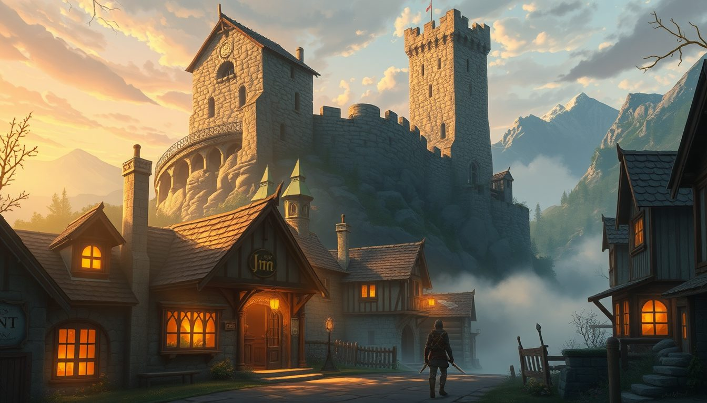
Prologue
Morning at the Sleeping Cat Inn
Lv1–10Rockhill TownNorth RockhillRockhill Great Mine
Rockhill, a town tucked among the mountains. You wake to the smell of straw at the Sleeping Cat Inn. In your pocket are a few Grim and a scrap of paper you can't remember ever picking up. You don't know it yet, but it is one of the grimoire's pages, fallen from the sky.
The guard at the East Gate warns you: "If you're heading out, watch out for monsters." You chase Goblins across the northern fields, hunt Rabbits, and help the townsfolk with their troubles, and little by little the town comes to know your name.
Then one day a miner grumbles, "A Lord has taken up residence deep in the mine." Waiting at the bottom of the dark Great Mine is Great Mine Lord Dorgan. And on the night after your first battle, Mentor Elna tells you:
"Your name has been written on the page. You are no longer alone."
The healer Cleric Sera takes a place at your side as your first Bond.
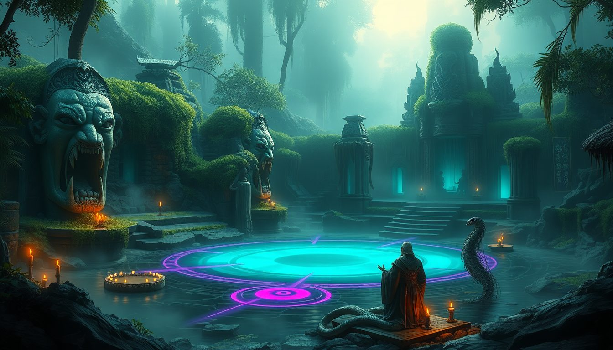
Chapter One
Prayers in the Mist
Lv8–20Mistveil JungleVeil VillageSouth Rockhill
Orcs and Wargs prowl the southern road. When you need someone to stand in front, Warrior Rio raises a shield. One by one, new companions join you on the page.
The Mistveil Jungle lies wrapped in fog. Beside a spring dappled with sunlight, a giant stone face, carved by no one knows whom, sleeps with its gaze fixed to the south.
At that spring, a serpent-bodied priest was praying: Serpent Priest Shezal. Listen closely, and the prayers of the Naga sound like this: "O sleeping bearer of the Crown, devour the pages and awaken."
On the night the ritual was broken, the guild receptionist set down a cup and muttered:
"The prayers have stopped... But perhaps it was only a sign of things to come."
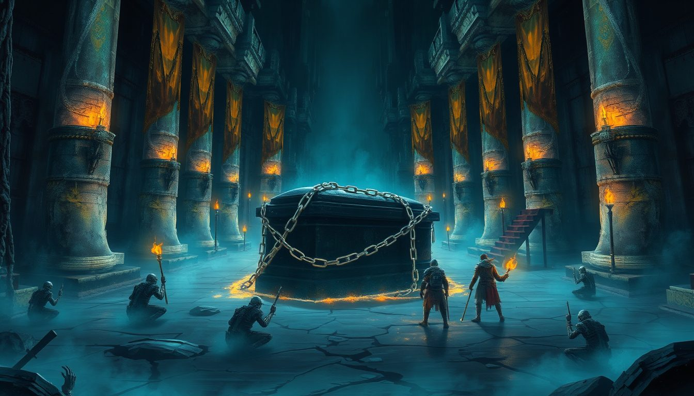
Chapter Two
The Silver Chains of the Mausoleum
Lv20–36Verdan HighlandsUnderground MausoleumPath of the Expert Jobs
Beneath the Verdan Highlands sleeps the mausoleum of an ancient kingdom. Stone pillars, crumbling banners, and at the center, a coffin. The silver chains that bind it have snapped in places, from the inside.
Even after you lay the Lord of the Mausoleum, Velga, to rest, the gravekeeper's face does not brighten.
"It's quiet now... but something darker has woken."
In the darkness of the highlands, the first Crown gleams: Abyss King Gualdos. Swollen from devouring pages, the Abyss Demon King laughed as he fell. "The Crown is not mine. We only hold it for another."
At Lv30, a "second way of life" opens before you. The lord of the castle offers a knight's shield; the gravekeeper, a sword of darkness; the mercenary captain, the arts of shadow; the fang carver, a lyre of dragon bone. Each master will put you to the test.
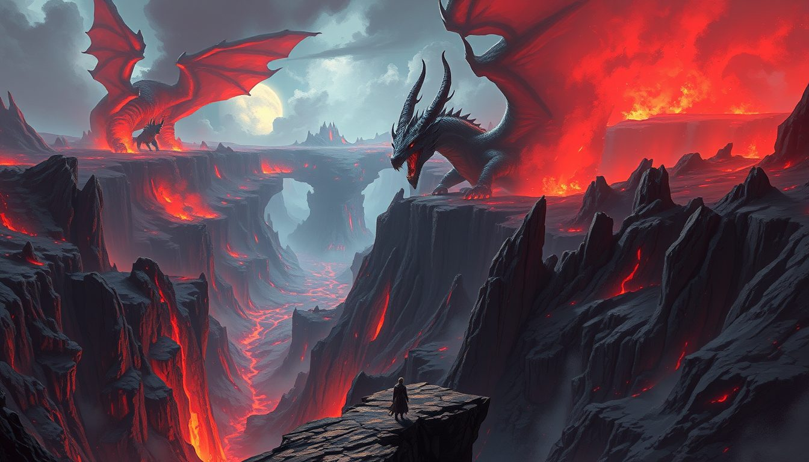
Chapter Three
The Dragon Monarch of the Vale
Lv30–46Vale of Myriad FiendsDragon ValleyFinal Quest of the Adventurers' Guild
Deep within the Vale of Myriad Fiends, where Demons roam, lies a valley lined with dragons. The Nightmare Dragon Valgana, the Terror Dragon, the Soul-Devourer Dragon, and the one who commands them all: the Dragon Monarch.
"This is the Guild's final quest... Come back alive, and your name will go down in the records."
Crowned with black horns, the Dragon Monarch took the blows of your sword and growled in an ancient tongue: "Little one, shattering the Crowns is futile. Our master is in the sky. The Usurper Dragon awaits the day it takes the Quill in hand."
The name of the dragon-slayer did indeed go down in the records. And the second Crown rolled to the floor of the valley.
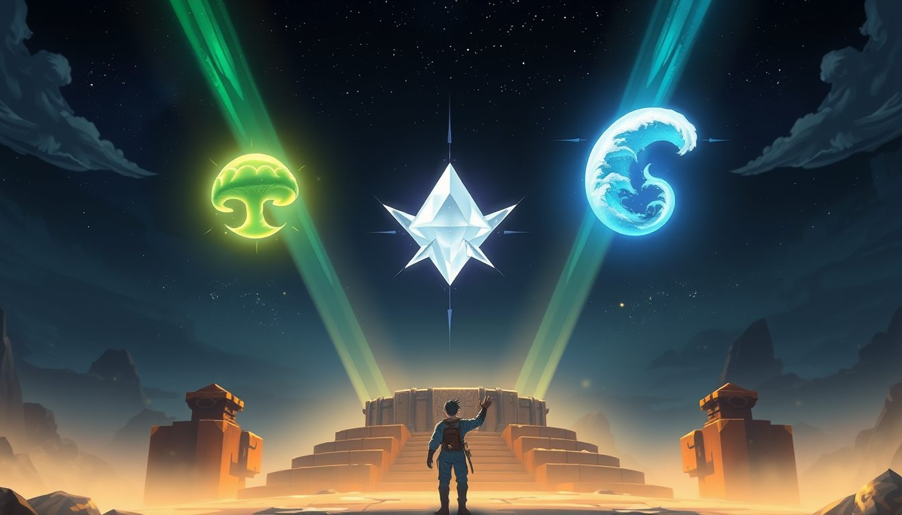
Chapter Four
The Three Crests
Lv35–52Morga SporewoodSalta Salt FlatsEmel Coast
West of town, north of the castle. The keeper of the Mirror Shrine, Shadowwarden Seira, looked at you for a long moment and said:
"The Mirror Shrine opens only to those who have slain a King."
Gather the three Crests, she told you. Spore Queen Morga, who rules the forest of spores. Salt-Crown King Salta, who reigns over the dried-up salt lake. And Tidal King Galmare, who rises from the waters off the Emel Coast, where the wreckage of ships washes ashore.
On the sands of the Emel Coast stands a lone statue that gazes only at the southern sea. The stone face in the jungle faced south, too. ...Could that be a coincidence?
(By the way, the Mushroom King who calls himself "Lord of the Forest" wears a crown that, if you look closely, turns out to be a mushroom cap he wove himself.)
"The three Crests are gathered. Go to the Mirror Shrine. The Shadow Adventurers are waiting for you."
Step through the mirror, and you find yourself in another Rockhill. The same cobblestones, the same castle, only with everything turned inside out. These are the reverse pages of the grimoire.
No monsters wait here. Instead there are adventurers who have jobs just as you do and who support one another: the Shadow Adventurers. They are the shadows of those whose stories broke off mid-page, those who never became Heroes, and they still guard the Hero's Seat.
The Stone Prison, the Underground Waterway, the Archive, the Chapel. "Take down the healer first." In the Hall of Mirrors, your own reflection draws its sword. "Know yourself. What the mirror shows is you."
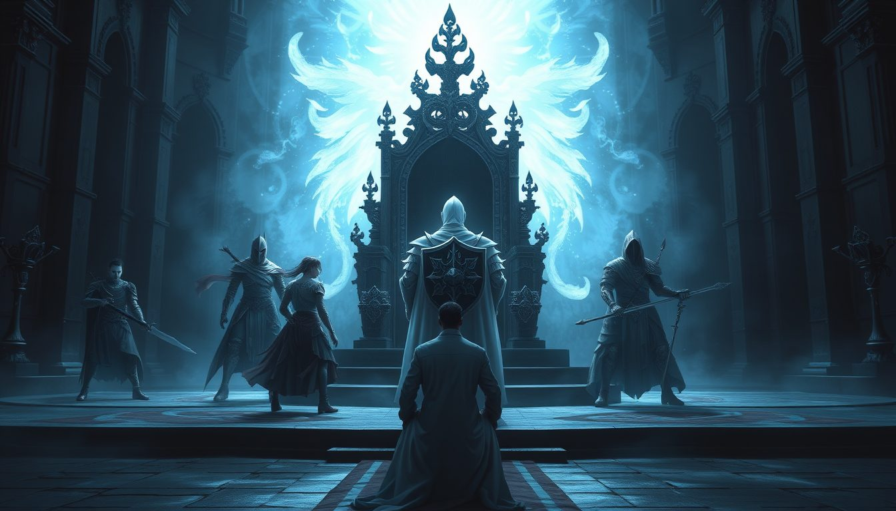
B10, the King's Chamber — the Former Hero's party
And on the lowest floor, in the King's Chamber, a knight bearing a silver-white shield stands before the throne: Former Hero Leon, with five companions. Twenty years ago, this party tried to climb the stair to the Sky Capital, and fell, pages and all.
"It's not over yet...!"
Fallen companions rise again and again. The Hero does not fall. Not until you inherit that seat.
After the final blow, Leon's shadow smiled gently. "Write what comes next." On that day, the mightiest combined attack, unleashed by you and all of your Bonds, became yours: United Valor.
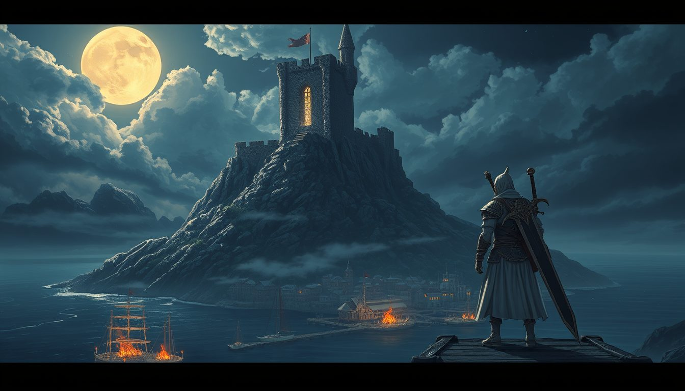
Chapter Six
The Cape at the World's End, and the King Beneath the Lake
Lv54–60Cape VermiaLeaden Salt BasinPath of the Sword Saint
At the farthest edge of the map lies Cape Vermia. The harbor's head fisherman points to the hill in the northeast. "That castle's been abandoned for ages. Some folks say they see a light there at night."
At the eastern edge of the harbor stood a man in white and black armor, a greatsword on his back: Sword Saint Sigurd.
"Ruined Castle Lord Galderic. The man who cut down my master. Slay him. I won't lift a finger."
Even after his enemy had returned to the earth, Sigurd did not lay down his sword. "There is one more thing I need to know." His master was Dinn, a warrior in the Former Hero's party: the very shadow you crossed swords with in the King's Chamber of Shadow Rockhill. When the Sword Saint learns that his master's story found its ending at your hand, he draws his greatsword for your sake for the first time.
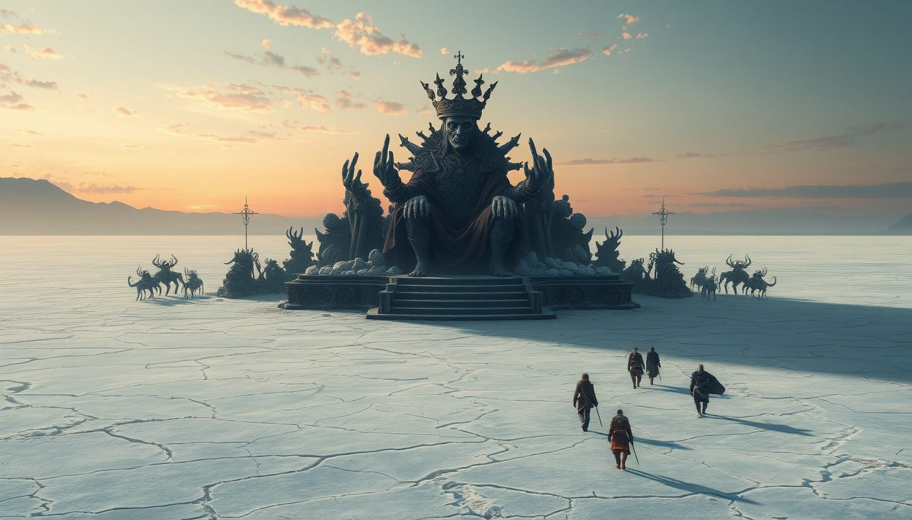
Leaden Salt Basin — Lakebed King Nergal
At the bottom of the dry lake sits one who calls himself a King: the bearer of the sixth Crown, Lakebed King Nergal. Having drunk the lake's memories down to the very last drop, the King looked up at the sky as he crumbled.
"Six... Crowns have fallen. Do you hear it, little one? In the sky. The beating of wings."
On the night the lake fell silent, many of the townsfolk say they saw the grimoire flare brightly in the sky above Rockhill, just for a moment.
The Seven Crowns
Abyss King GualdosVerdan Highlands — Chapter Two
Dragon MonarchVale of Myriad Fiends — Chapter Three
Spore Queen MorgaMorga Sporewood — Chapter Four
Salt-Crown King SaltaSalta Salt Flats — Chapter Four
Tidal King GalmareEmel Coast — Chapter Four
Lakebed King NergalLeaden Salt Basin — Chapter Six
Usurper Dragon —Sky Capital Aership — Part Two
Those Whose Names Are Written
Bond — Cleric
Sera
The healer who is first to stand at your side. Knows when a foe must be struck down, and when to reach out a hand.
Bond — Warrior
Rio
A shield who draws every enemy's attention, protecting you and your healer.
Bond — Bard
Luka
A wandering musician with a lyre. Never lands a blow, but sets the whole party's hearts ablaze with Battle Songs.
Bond — Dread Knight
Val
Has a will that the life-devouring darkness cannot swallow. In Shadow Rockhill, there is a shadow who bears the same name...
Bond — Sword Saint
Sigurd
White and black armor, and a greatsword. Came to the cape at the world's end hunting his master's killer. Uses no magic, and clears the way with a single Flash Cut.
Keeper of the Mirror Shrine
Shadowwarden Seira
A witch who tests your Hero's Credentials. She seems to have had some tie to the Former Hero's party.
Shadow Rockhill B10
Former Hero Leon
The Hero who tried to climb the stair to the Sky Capital twenty years ago. Now a shadow, still guarding the Hero's Seat.
The Seventh Crown
Usurper Dragon
The dragon that tried to steal the grimoire's Quill. It has slept beyond the sky, waiting for the six Crowns to fall.
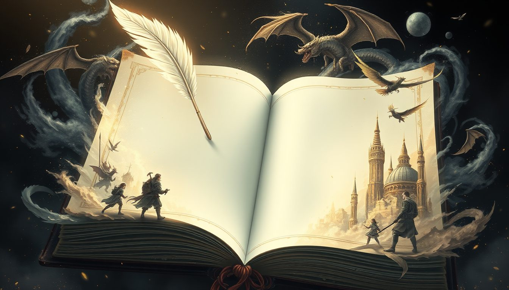
The Final Chapter, and a Prologue
The Margins of the Page
Lv60. A Veteran Adventurer. All six Crowns have fallen.
But as you leaf through the grimoire, you notice something. The written pages end here. Beyond them stretch blank pages without end, and drifting above them, a single Quill of Light.
Lv60 is not the last line of this book. It is the first line of the next page, one no one has written yet.
— Beyond this point lies a story yet to be written (in planning) —
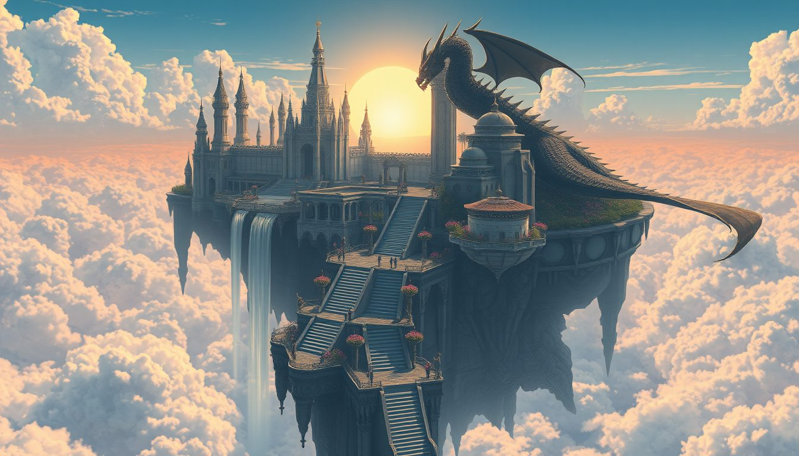
Part TwoIn Planning
Sky Capital Arc — The Throne Above the Clouds
Lv60–70Sky Corridor SummitSky Capital Aership
Everyone thought the Sky Corridor was just a tower on the edge of town, a place to jump around for fun. The flower spiral, the swaying rope bridge, the windmill tower... and past its summit, a stone stair hidden in the clouds comes into view. It was never a playground. It is what remains of the Skyward Stair that once joined the land to the Sky Capital.
The key is the Queen's Orb the scholar was searching for. Do you remember the two untitled paintings hanging in the throne room of Rockhill Castle? One shows a city above the clouds. The other, a queen holding an orb to her breast.
Beyond the clouds, coiled around the highest tower of a white marble city, is the Usurper Dragon, bearer of the seventh Crown. Quill in its grasp, the dragon had begun to rewrite the grimoire, and with the Hero's Seat left empty, shadows come pouring out across the land.
Sword Saint Sigurd entrusts you with a single sword form. A day will come when the path of the Sword Saint belongs to more than the Bonds alone.
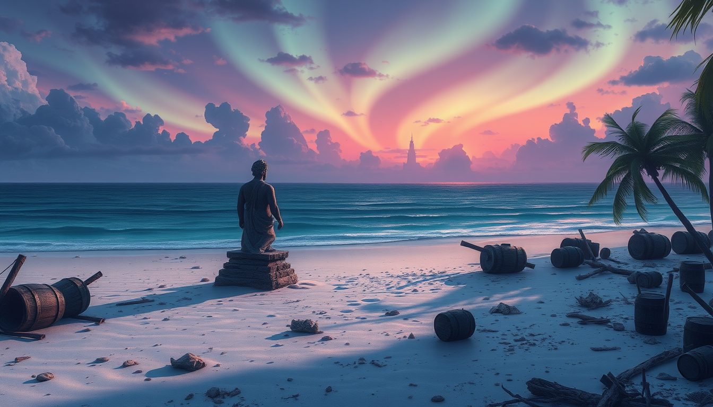
Part ThreeIn Planning
Southern Seas Arc — What the Stone Watchers See
Lv70+South of the Emel CoastAn Uncharted Continent
The stone face in the jungle. The stone guardian that sleeps in the Ancient Wood. The statue on the Emel Coast that gazes only at the southern sea. All three stone watchers were facing the same way.
Not every page of the grimoire that scattered from the sky on that stormy night came down on the land. Many of them, it is said, crossed the southern sea and settled on a continent no one knows. The wrecked ships that wash up on the beach belonged to those who set out for it and never returned.
The gravekeeper remembers, one by one, "the names of the adventurers who never came back." Among them is a single name that you know.
Mysteries Yet Unsolved
Worn Map — An "old map of the surrounding lands," given to you by a traveling merchant. Surrounding what, exactly?
Holy Sigil Shard — An old holy sigil a Goblin was carrying. No one knows which temple it came from.
Star Iron and Stardust Herb — Iron that fell from the sky. An herb that grows only where a star has fallen. Was it really a star that fell?
The Nameless Black Knight — An ancient soldier wandering the Leaden Salt Basin. His earring holds a grief that never fades.
Two Pairs of Names — Beast Tamer Luca and Bard Luka. Shadowwarden Seira and Cleric Sera. Are the similar names just a coincidence?
Write the Next Page with Your Own Hand
Grimoire Online is a free 3D MMORPG made by a solo developer. A Windows version is available (in development, free to play).